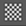

将棋盘格图案着色器应用到 UV 网格
应用棋盘格图案着色器
选择对象并打开
UV 编辑器(UV Editor)
（
“窗口
>
建模编辑器
>
UV 编辑器”
(Windows > Modeling Editors > UV Editor)）。
在
“UV 编辑器”(UV Editor)
工具栏中，单击棋盘格图案着色器图标 ，或转到
“纹理
>
棋盘格贴图”
(Textures > Checker Map)。
棋盘格图案着色器将应用于 UV 网格的曲面，并显示在
“UV 编辑器”(UV Editor)
中栅格的后面。
单击鼠标右键以在
棋盘格贴图选项(Checker Map Options)
中从简单的黑白着色器切换到颜色渐变。使用颜色渐变可以更轻松地查找 UV 网格上的平铺。
提示：
如果棋盘格图案着色器未显示在网格中，请确保在
“渲染器”(Renderer)
面板菜单中选择了
“Viewport 2.0”
。
在以下示例中，棋盘格的大小不一致，这表示某些区域的纹理被拉伸。
注：
棋盘格图案着色器并不影响对象的原始材质、着色器和纹理指定。
要禁用棋盘格着色器，请执行以下操作之一：
关闭
“UV 编辑器”(UV Editor)
。
单击棋盘格图案着色器图标。
该网格的原始材质、着色器和纹理指定会重新显示在 UV 网格上和
“UV 编辑器”(UV Editor)
中。
相关主题
准备 UV 壳以进行展开
识别 UV 扭曲
父主题：
显示和选择 UV